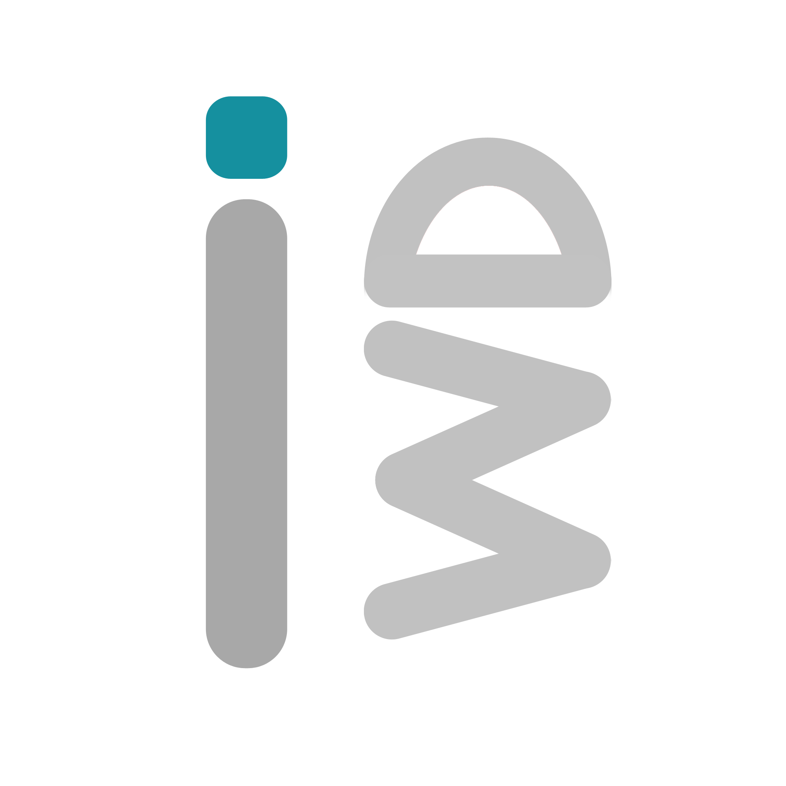
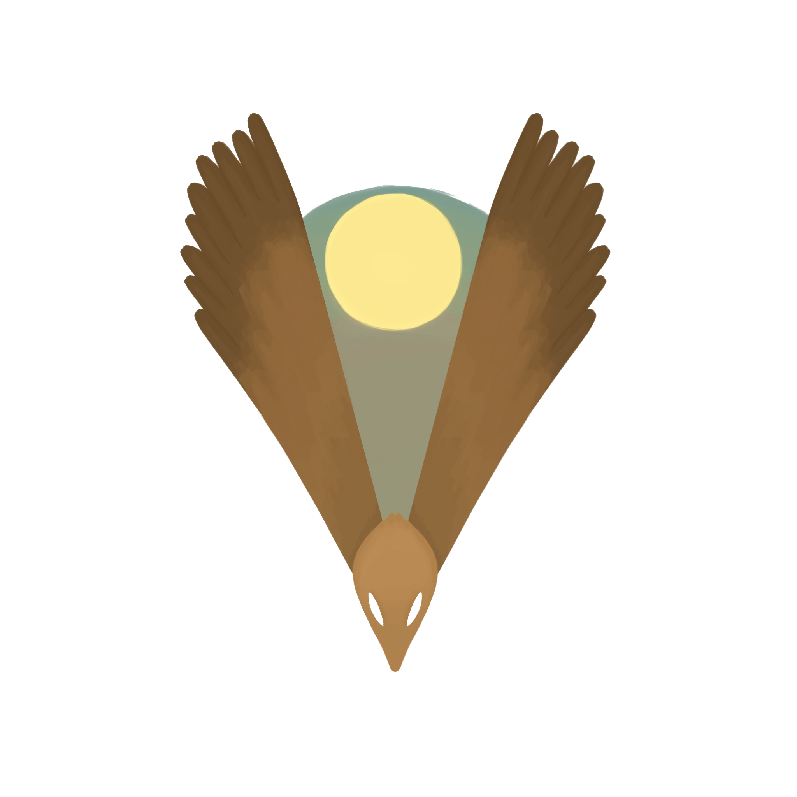
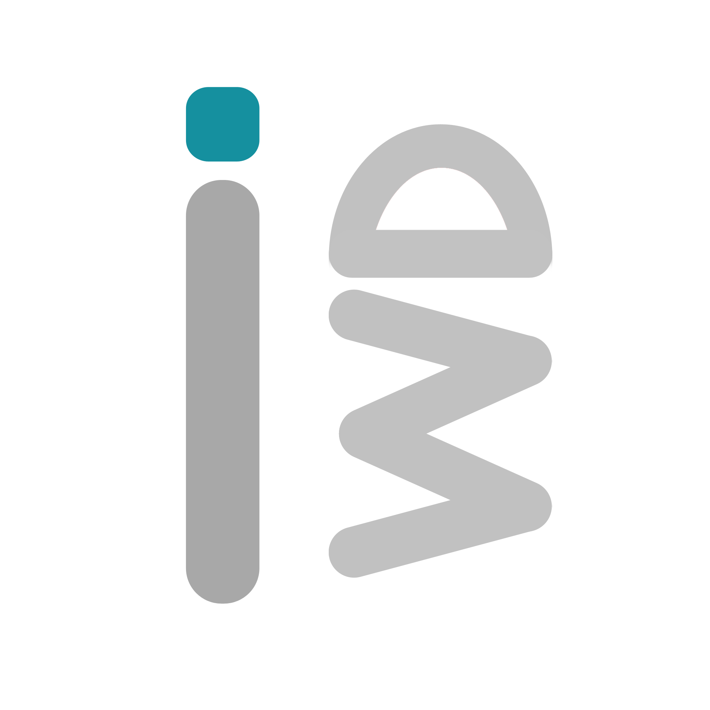
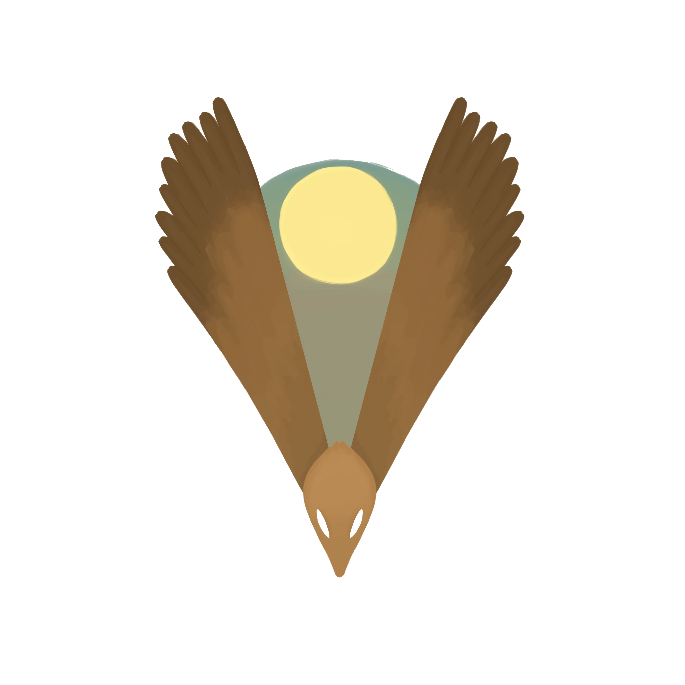

Projects
Welcome to my projects page. Here you can view all the projects I have created and/or contributed to! You can view some of my WIP (Work in progress) projects, but most of them will be hidden until they're complete. My projects, and their logos, can be seen on this page. Simply click on their logo to be taken to their page!
 


